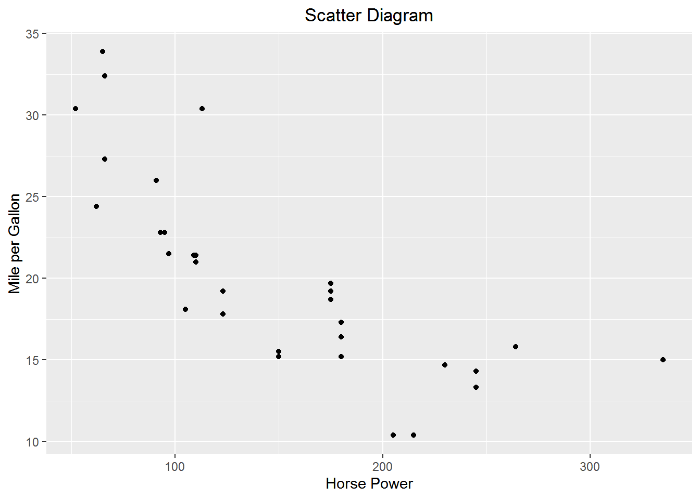
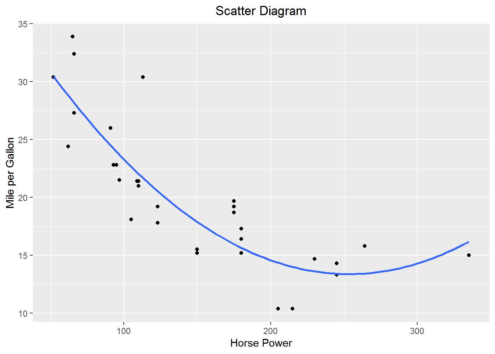
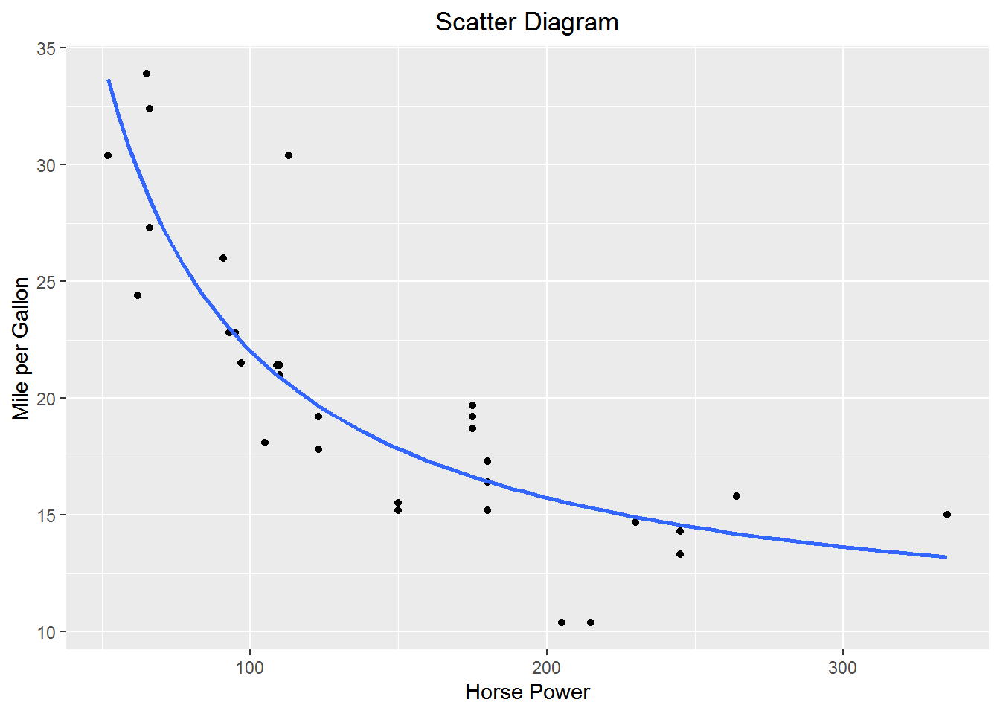

Chapter 9 Specifying Models
In addition to its role in limiting endogeneity, model specification plays an important role in modeling in economics. The defining characteristic of economic reasoning is marginalism so having functional forms that make marginal sense is important. In this chapter we will learn to estimate some important functional forms in economics.
We will use the following libraries.
9.1 Polynomial Models
Estimating a model of the form \(y=\beta_0+\beta_1x+\beta_2x^2+\beta_3x^3+\cdots+\beta_kx^k+\epsilon\) is straightforward in R. There is no need to create new variable within the data frame since the variables can be created directly as arguments within a function, e.g., lm.
Create a scatter diagram of miles per gallon vs horse power from the mtcars built in data set.
p <-
mtcars %>%
ggplot(aes(x= hp, y = mpg)) +
geom_point() +
labs(y = "Mile per Gallon", x = "Horse Power", title = "Scatter Diagram") +
theme(plot.title = element_text(hjust = 0.5))
p
It appears as if mpg falls at a diminishing rate as horse power increases. There are a number of functional forms that will gives us that basic shape. One such form is quadratic. Let’s estimate a quadratic form of the model \(mpg = \beta_0+\beta_1hp+\beta_2hp+\epsilon\)
Call:
lm(formula = mpg ~ hp + I(hp^2))
Coefficients:
(Intercept) hp I(hp^2)
40.409117 -0.213308 0.000421 Add the quadratic fit to the scatter diagram

Adding higher order polynomials is accomplished by adding additional AsIs functions I() to the model.
9.2 Logarithmic
Logarithms have a wide variety of uses in Econometrics.
9.2.1 Constant Elasticity (log-log or double log)
Log-log models are of the form \(\ln y = \beta_0 + \beta_1\ln x\). So \(\beta_1 = \frac{d\ln y}{d\ln x}\)
Recall that \(dlnX=\frac{dX}{X}\); that is, the change in the logarithm is a percent change in a variable. For example, \(\Delta lnP\) is the % change in \(P\).
So, \(\beta_1\) is the percent change in y resultant from a 1% change in x. Or, a one percent change in x will induce a \(\beta_1\) percent change in y.
Constant elasticity demand functions are estimated using log-log models. Let, \(q=\alpha p^\beta\) where \(\beta<0\) be the demand function. Recall he elasticity of demand is given by \(\eta=\frac{\text{%}\Delta q}{\text{%}\Delta p} = \frac{dq/q}{dp/p}=\frac{dq}{dp}\frac{p}{q}\). The elasticity of demand for our demand function is \[\eta=\beta\alpha p^{\beta-1}\frac{p}{q}=\frac{\beta\alpha p^{\beta}}{q}\] Substitute for \(q=\alpha p^\beta\) \[\eta=\frac{\beta\alpha p^{\beta}}{\alpha p^\beta}=\beta\] The elasticity of demand is \(\beta\) which is invariant. To make \(q=\alpha p^\beta\) estimable with OLS take the logarithm of both sides: \[\ln(q)=\ln(\alpha p^\beta\epsilon)\] \[\ln(q)=\ln(\alpha)+\ln( p^\beta)+\ln(\epsilon)\] \[\ln(q)=\gamma+\beta\ln(p) + \delta\] is now in estimable form and can estimated by lm(log(q) ~ log(p), data = df)
Cobb-Douglas production functions are also estimated as log-log models. Let’s estimate a Cobb-Douglas model for horsepower as a function of number of cylinders and displacement in cubic inches from the mtcars data. The production function is: \[hp=\beta_0cyl^{\beta_1}disp^{\beta_2}\epsilon\] The estimable form of the model is \[\ln hp=\alpha_0+\beta_1\ln cyl+\beta_2\ln disp+\gamma\]
Call:
lm(formula = log(hp) ~ log(cyl) + log(disp))
Coefficients:
(Intercept) log(cyl) log(disp)
1.851 0.817 0.299 \(\hat\beta_1\) indicates that a 1% increase in the number of cylinders, ceteris paribus, increases horsepower by 0.8170%. \(\hat\beta_2\) indicates that a 1% increase in the displacement, ceteris paribus increases horsepower by 0.2986%.
9.2.2 Constant Growth in a Dependent Variable (log-lin or semilog)
The log-lin model has the form \(\ln y = \beta_0 + \beta_1x\). \(\beta_1 = \frac{d\ln y}{dx}\) or the percent change in y resultant from a 1 unit change in x. Or, a unit change in x will induce a \(100*\beta_1\) percent change in y.
Suppose we have a variable P that is growing at a constant rate of g per period t such that \(P_t=(1+g)P_{t-1}\). By repeated substitution we get \(P_t=P_0(1+g)^t\) where \(P_0\) is the initial value of Y.4 We could calculate g without regression as \[g=\sqrt[t]\frac{P_t}{P_0}-1\]. We could calculate g with a regression with the aid of logarithms. Let the model be \(P_t=P_0(1+g)^t\epsilon\). Taking the logarithm of both sides yields \[\ln(P_t)=\ln(P_0)+t\ln(1+g)+\ln(\epsilon)\] Which we can estimate as \[Y_t=\beta_0+\beta_1t+u_t\] Where \(\beta_0=\ln(P_0)\), \(u_t = \ln(\epsilon_t)\), and, most importantly, \(\beta_1=\ln(1+g)\). We can get our estimate of \(g\) from \(\hat\beta_1=\widehat{\ln(1+g)}\) by exponentiating both sides and solving for \(g\). \[e^{\hat\beta_1}=e^{\widehat{\ln(1+g)}}\] \[\hat{g}=e^{\hat\beta_1}-1\]5
Suppose we’d like to know the percent change in fuel mileage resultant from adding a cylinder to the car using the mtcars data. Estimate the model \(\ln mpg=\beta_0+\beta_1cyl+\epsilon\)
Call:
lm(formula = log(mpg) ~ cyl)
Coefficients:
(Intercept) cyl
3.839 -0.143 \(\hat\beta_1\) indicates that adding one cylinder reduces fuel mileage by 14.25%.
9.2.3 Constant % Change in Dependent Variable (lin-log)
The lin-log model has the form \(y=\beta_0+\beta_1\ln x\). \(\beta_1 = \frac{dy}{d\ln x}\) or the change in y from a 1 percent change in x. Or, one percent change in x will induce a \(\frac{\beta_1}{100}\) unit change in y.
Suppose we’d like to know the change in the number of miles per gallon as a function of the percent change in displacement. Estimate the model \(mpg=\beta_0+beta_1\ln disp+\epsilon\)
Call:
lm(formula = mpg ~ log(disp))
Coefficients:
(Intercept) log(disp)
69.21 -9.29 \(\hat\beta_1\) indicates that a one percent change in displacement will decrease fuel mileage by .093 mpg.
9.3 Other Useful Functional Forms
We know that marginal analysis is the sine qua non of economic reasoning. So our economic models should be built with an eye toward what we think the marginal relationship should look like from theory. Use a sort “a poor man’s” differential equations to work from a marginal model to the functional form. For example, consider production as a function of labor holding capital constant \(Q=Q(\bar K, L)\) with K fixed at \(\bar K\). From microeconomic theory we know that the marginal product of labor, \(MP_L=\frac{dQ}{dl}\) at some point diminishes. This suggests \(MP_L=\beta_1+\beta_2L+\beta_3L^2\) where \(\beta_1\ge0, \beta_2>0, \text{ and } \beta_3<0\) as the model product of labor. The production function that will yield this marginal product is \(Q=\beta_0+\beta_1L+\beta_2L^2+\beta_3L^3\). Thus the usefulness of a polynomial functional form in economics.
There are other functional forms that will yield diminishing marginal functions. For example, another functional form that will yield a diminishing marginal is a rectangular hyperbola \(y=\beta_0+\frac{\beta_1}{x}\). The marginal effect of x on y is \(\frac{dy}{dx}=\frac{-\beta_1}{x^2}\). A one unit change in X leads to a \(\frac{1}{x}\) change in y. Notice as x increases the change in y decreases, i.e., diminishing marginal.
The plot of miles per gallon vs. horsepower above suggests a negative diminishing relationship between the variables. Suppose we postulate that miles per gallon is a function of the inverse of horsepower \(mpg = \beta_0 + \frac{\beta_1}{hp}+\epsilon\).
Call:
lm(formula = mpg ~ I(1/hp))
Coefficients:
(Intercept) I(1/hp)
9.43 1259.88 Add the fitted model to scatter diagram.

Note the relationship to the time value of money. Let \(FV=PV(1+r)^t\). Suppose we’d like to calculate the average annual rate of return, r, on \(\text{\$PV}\), given a future value of \(\text{\$FV}\). After appropriate algebraic gymnastics, \(r=\sqrt[t]\frac{FV}{PV}-1\)↩
We know that \(\beta_1=\frac{d(\ln P_t)}{dt}\). Since \(d(\ln P_t)=\frac{dP_t}{P_t}\) or the percent change in \(P_t\), \(\beta_1\) is known as the instantaneous rate of growth.↩